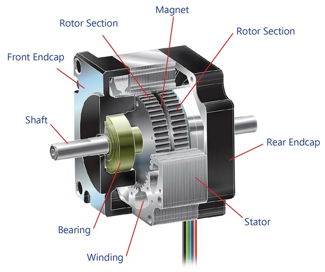
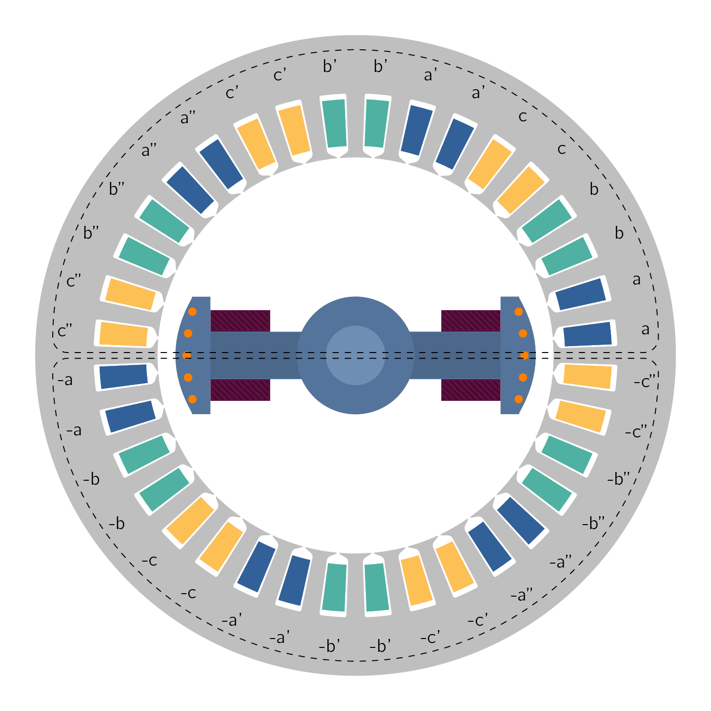
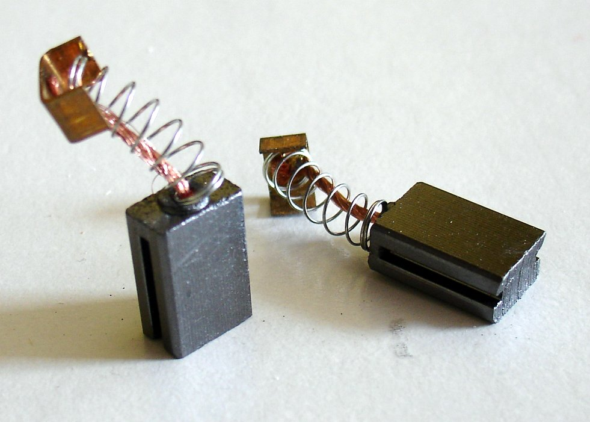
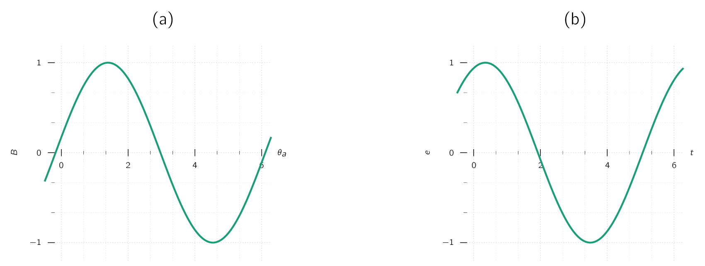
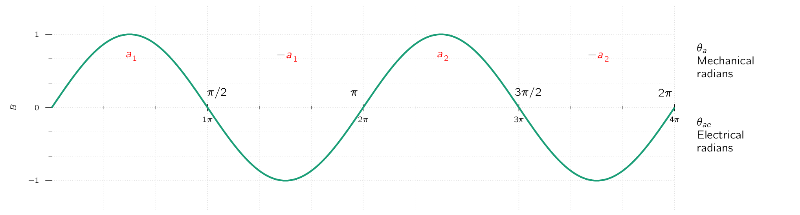
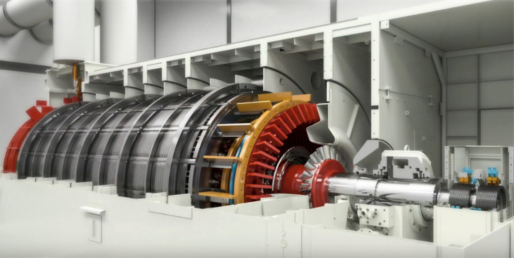
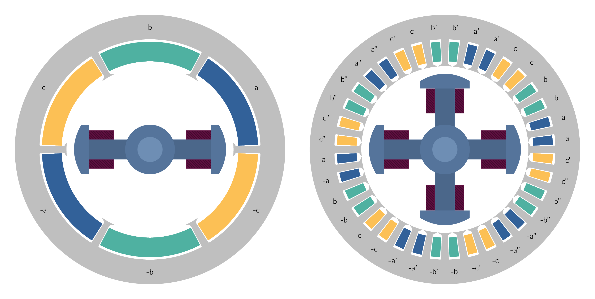
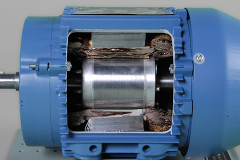
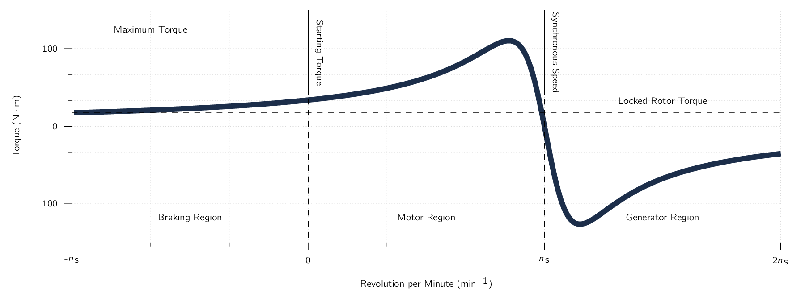
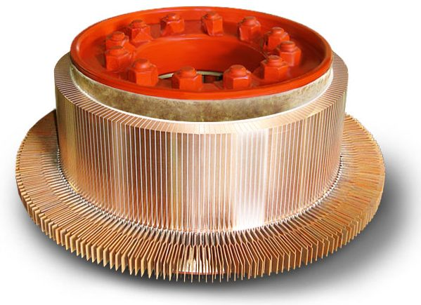

In rotating machines, voltages are generated in windings or groups of coils by rotating these windings mechanically through a magnetic field, by mechanically rotating a magnetic field past the winding, or by designing the magnetic circuit so that the reluctance varies with rotation of the rotor.
By either or both of these methods, the flux linking a specific coil is changed cyclically, and a time-varying voltage is generated.
A set of coils connected together is typically referred to as an armature winding. In general, the term armature winding is used to refer to a winding or a set of windings on a rotating machine which carry ACAlternating CurrentAn electric current that periodically reverses direction and changes its magnitude continuously with time, in contrast to direct current (DC), which flows only in one direction.. In ACAlternating CurrentAn electric current that periodically reverses direction and changes its magnitude continuously with time, in contrast to direct current (DC), which flows only in one direction. machines such as SynMSynchronous Machinean AC electrical device which operates at a constant synchronous speed, serving as either a synchronous generator (alternator) or a synchronous motor. It features a stationary stator with three-phase windings and a rotating rotor excited by direct current (DC) or permanent magnets. or IMInduction Machinean AC electric motor in which the electric current in the rotor that produces torque is obtained by electromagnetic induction from the magnetic field of the stator winding., the armature winding is typically on the stationary portion of the motor referred to as the stator, in which case these windings may also be referred to as stator windings.
In DCDirect CurrentOne-directional flow of electric charge. Direct current may flow through a conductor such as a wire, but can also flow through semiconductors, insulators, or even through a vacuum as in electron or ion beams. The electric current flows in a constant direction, distinguishing it from alternating current (AC). A term formerly used for this type of current was galvanic current. machines, however, the armature winding is found on the rotating part, referred to as the rotor.Fig. 4.1 shows a DCDirect CurrentOne-directional flow of electric charge. Direct current may flow through a conductor such as a wire, but can also flow through semiconductors, insulators, or even through a vacuum as in electron or ion beams. The electric current flows in a constant direction, distinguishing it from alternating current (AC). A term formerly used for this type of current was galvanic current. machine rotor with its armature windings. As we will see, the armature winding of a DCDirect CurrentOne-directional flow of electric charge. Direct current may flow through a conductor such as a wire, but can also flow through semiconductors, insulators, or even through a vacuum as in electron or ion beams. The electric current flows in a constant direction, distinguishing it from alternating current (AC). A term formerly used for this type of current was galvanic current. machine consists of numerous coils connected together to form a closed loop. A rotating mechanical contact is used to supply current to the armature winding as the rotor rotates.
SynMSynchronous Machinean AC electrical device which operates at a constant synchronous speed, serving as either a synchronous generator (alternator) or a synchronous motor. It features a stationary stator with three-phase windings and a rotating rotor excited by direct current (DC) or permanent magnets. and DCDirect CurrentOne-directional flow of electric charge. Direct current may flow through a conductor such as a wire, but can also flow through semiconductors, insulators, or even through a vacuum as in electron or ion beams. The electric current flows in a constant direction, distinguishing it from alternating current (AC). A term formerly used for this type of current was galvanic current. machines typically include a set of winding [76] or set of windings. which carry DCDirect CurrentOne-directional flow of electric charge. Direct current may flow through a conductor such as a wire, but can also flow through semiconductors, insulators, or even through a vacuum as in electron or ion beams. The electric current flows in a constant direction, distinguishing it from alternating current (AC). A term formerly used for this type of current was galvanic current. current and which are used to produce the main operating flux in the machine. Such a winding is typically referred to as field winding. The field winding on a DCDirect CurrentOne-directional flow of electric charge. Direct current may flow through a conductor such as a wire, but can also flow through semiconductors, insulators, or even through a vacuum as in electron or ion beams. The electric current flows in a constant direction, distinguishing it from alternating current (AC). A term formerly used for this type of current was galvanic current. machine is found on the stator, while that on a SynMSynchronous Machinean AC electrical device which operates at a constant synchronous speed, serving as either a synchronous generator (alternator) or a synchronous motor. It features a stationary stator with three-phase windings and a rotating rotor excited by direct current (DC) or permanent magnets. is found on the rotor, in which case current is typically supplied to the field winding via a rotating mechanical contact, with the exception being machines for which a rotating excitation system supplies the field current.
PMPermanent MagnetAn object made from a material that is magnetized and creates its own persistent magnetic fields are also produce DCDirect CurrentOne-directional flow of electric charge. Direct current may flow through a conductor such as a wire, but can also flow through semiconductors, insulators, or even through a vacuum as in electron or ion beams. The electric current flows in a constant direction, distinguishing it from alternating current (AC). A term formerly used for this type of current was galvanic current. magnetic flux and are used in the place of field windings in some machines.
For most rotating machines, the stator and rotor are made of electrical steel, and the windings are inserted in slots on these structures.
Electrical steel is a specialty steel used in the cores of electromagnetic devices such as motors, generators, and transformers because it reduces power loss. It is an iron alloy with silicon as the main additive element, instead of carbon.
The use of such high-permeability material maximises the coupling between the coils and increases the magnetic energy density associated with the electromechanical interaction. It also enables the engineer to shape and distribute the magnetic fields according to the requirements of each particular machine design.
The time-varying flux present in the armature structures of these machines tends to induce currents, known as eddy currents, in the electrical steel.
Eddy currents can be a large source of loss in these machines and can significantly inhibit machine performance.
To minimize the effects of eddy currents, the armature structure is typically built from thin laminations of electrical steel which are insulated from each other.
Machines, such as variable reluctance machines [77]
Also known as switched reluctance machines in literature. and stepper motors
[78] 
In such machines, both the stator and rotor structures are subjected to time-varying magnetic flux and, as a result, both require lamination to reduce eddy-current losses.
Rotating electric machines take many forms and are known by many names:
While these machines appear to be quite different, the physical principles governing their behavior are quite similar, and it is often helpful to think of them in terms of the same physical picture. For example:
- DC Machine
-
Analysis shows that associated with both the rotor and the stator are magnetic flux distributions which are fixed in space and the torque-producing characteristic of stems from the tendency of these flux distributions to align.
- Induction Machine
-
Works on exactly the same principle. We can identify flux distributions associated with the rotor and stator. While they are NOT stationary but rather rotate in synchronism, just as in a DCDirect CurrentOne-directional flow of electric charge. Direct current may flow through a conductor such as a wire, but can also flow through semiconductors, insulators, or even through a vacuum as in electron or ion beams. The electric current flows in a constant direction, distinguishing it from alternating current (AC). A term formerly used for this type of current was galvanic current. motor they are displaced by a constant angular separation, and torque is produced by the tendency of these flux distribution to align. [79] A more important aspect is to create an analogy between ACAlternating CurrentAn electric current that periodically reverses direction and changes its magnitude continuously with time, in contrast to direct current (DC), which flows only in one direction. and DCDirect CurrentOne-directional flow of electric charge. Direct current may flow through a conductor such as a wire, but can also flow through semiconductors, insulators, or even through a vacuum as in electron or ion beams. The electric current flows in a constant direction, distinguishing it from alternating current (AC). A term formerly used for this type of current was galvanic current. machines, which allows high-efficient control. This will be one of the main topics in M.Sc Drive Systems.

Traditionally ACAlternating CurrentAn electric current that periodically reverses direction and changes its magnitude continuously with time, in contrast to direct current (DC), which flows only in one direction. machines fall into one of two (2) broad categories:
-
Synchronous, or
-
Induction.
In SynMSynchronous Machinean AC electrical device which operates at a constant synchronous speed, serving as either a synchronous generator (alternator) or a synchronous motor. It features a stationary stator with three-phase windings and a rotating rotor excited by direct current (DC) or permanent magnets., rotor-winding currents are supplied directly from the stationary frame through a rotating contact whereas in IMInduction Machinean AC electric motor in which the electric current in the rotor that produces torque is obtained by electromagnetic induction from the magnetic field of the stator winding., rotor currents are induced in the rotor windings by a combination of the time-variation of the stator currents and the motion of the rotor relative to the stator.
Synchronous Machines
A rough picture of SynMSynchronous Machinean AC electrical device which operates at a constant synchronous speed, serving as either a synchronous generator (alternator) or a synchronous motor. It features a stationary stator with three-phase windings and a rotating rotor excited by direct current (DC) or permanent magnets. performance can be obtained by discussing the voltage induced in the armature of the noticeably simplified salient-pole ACAlternating CurrentAn electric current that periodically reverses direction and changes its magnitude continuously with time, in contrast to direct current (DC), which flows only in one direction. SynGSynchronous GeneratorSynchronous Generator shown schematically in Fig. 4.2. The field-winding of this machine produces a single pair of magnetic poles, [80] You can think of this as a bar magnet. and therefore this machine is referred to as a two-pole machine or one-pole pair machine.
With rare exceptions, armature winding of a SynMSynchronous Machinean AC electrical device which operates at a constant synchronous speed, serving as either a synchronous generator (alternator) or a synchronous motor. It features a stationary stator with three-phase windings and a rotating rotor excited by direct current (DC) or permanent magnets. is on the stator, and the field winding is on the rotor.
The field winding is excited by DCDirect CurrentOne-directional flow of electric charge.
Direct current may flow through a conductor such as a wire, but can also flow through
semiconductors, insulators, or even through a vacuum as in electron or ion beams. The electric
current flows in a constant direction, distinguishing it from alternating current (AC). A term
formerly used for this type of current was galvanic current., typically conducted to it by
means of stationary carbon brushes which contact rotating slip rings or collector rings.
[81] 
The armature winding, consisting here of only a single coil of turns, is indicated in cross section by the two coil sides a and -a placed in diametrically opposite narrow slots on the inner periphery of the stator of Fig. 4.2. The conductors forming these coil sides are parallel to the shaft of the machine and are connected in series by end connections.
The rotor is turned at a constant speed by a source of mechanical power connected to its shaft. The armature winding is assumed to be open-circuited and therefore the flux in this machine is produced by the field winding alone. Flux paths are shown schematically by dashed lines in Fig. 4.2.
A highly idealised analysis of this machine would be to assume a sinusoidal distribution of magnetic flux in the air gap. The resultant idealised radial distribution of air-gap flux density is shown in Fig. 4.3a as a function of the spatial angle around the rotor periphery. [82] measured with respect to the magnetic axis of the armature winding

In practice, the air-gap flux-density of practical salient-pole machines can be made to approximate a sinusoidal distribution by properly shaping the pole faces.
As the rotor rotates, the flux-linkages of the armature winding change with time. Under the assumption of a sinusoidal flux distribution and constant rotor speed, the resulting coil voltage will be sinusoidal in time as shown in Fig. 4.3b. The coil voltage passes through a complete cycle for each revolution of the two-pole machine of Fig. 4.2.
Its frequency in cycles per second () is the same as the speed of the rotor in revolutions per second: the electric frequency of the generated voltage is synchronised with the mechanical speed.
This is the reason for the designation synchronous machine and therefore a two-pole synchronous machine must revolve at 3000 revolutions per minute () to produce a voltage.
It is worth mentioning most SynMSynchronous Machinean AC electrical device which operates at a constant synchronous speed, serving as either a synchronous generator (alternator) or a synchronous motor. It features a stationary stator with three-phase windings and a rotating rotor excited by direct current (DC) or permanent magnets.s have more than just two poles. As a specific example, Fig. 4.4 shows in schematic form a four-pole single-phase generator. The field coils are connected so that the poles are of alternate polarity. There are two complete wavelengths, or cycles, in the flux distribution around the periphery, as shown in Fig. 4.5.

The armature winding now consists of two (2) coils: , - and , - which can be connected either in series or parallel. The span of each coil is one wavelength of flux. The generated voltage now goes through two (2) complete cycles per revolution of the rotor. The frequency in will therefore be twice the speed in revolutions per second.
When a machine has more than two (2) poles, it is convenient to concentrate on a single pair of poles [83] Or what we call pole-pairs. and to recognise the electric, magnetic, and mechanical conditions associated with every other pole pair are repetitions of those for the pair under consideration. For this reason it is convenient to express angles in electrical degrees or radians rather than in physical units.
One pair of poles in a multi-pole machine or one cycle of flux distribution corresponds to 360 electrical degrees or electrical radians. Given there are amount of complete wavelengths, or cycles, in one complete revolution, we can state:
| (4.1) |
where is the angle in electrical units, is the spatial angle. This same relationship applies to all angular measurements in a multi-pole machine.
Values in electrical units will be equal to times their actual spatial values.
The coil voltage of a multi-pole machine passes through a complete cycle every time a pair of poles sweeps by, or times each revolution. The electrical frequency of the voltage generated in a SynMSynchronous Machinean AC electrical device which operates at a constant synchronous speed, serving as either a synchronous generator (alternator) or a synchronous motor. It features a stationary stator with three-phase windings and a rotating rotor excited by direct current (DC) or permanent magnets. is therefore:
| (4.2) |
where is the mechanical speed in revolutions per minute (), which means is the speed in revolutions per second (). The electrical frequency of the generated voltage in radians per second is
| (4.3) |
where is the mechanical speed in radians per second ().
The rotors shown in Fig. 4.2 and Fig. 4.4 have salient, or projecting, poles with concentrated windings. Fig. 4.6 shows diagrammatically a non-salient-pole, or cylindrical, rotor. The field winding on the rotor is a two-pole distributed winding; the coil sides are distributed in multiple slots around the rotor periphery and arranged to produce an approximately sinusoidal distribution of radial air-gap flux.
The relationship between electrical frequency and rotor speed of Eq. (4.2) can serve as a basis for understanding why some synchronous generators have salient-pole rotor structures while others have cylindrical rotors.
Most power systems in the world operate at frequencies of either or .
- Salient Pole
-
characteristic of hydro-electric generators because hydraulic turbines operate at relatively low speeds, and hence a relatively large number of poles is required to produce the desired frequency. A salient-pole construction is better adapted mechanically to this situation.
- Cylindrical Rotor
-
Steam turbines and gas turbines operate best at relatively high speeds, and turbine-driven alternators or turbine generators are commonly two- or four-pole cylindrical-rotor machines.
These cylindrical rotors are made from a single steel forging or from several forgings, as shown in Fig. 4.7.

Most of the world’s power systems are three-phase systems and, as a result, with very few exceptions, SynGSynchronous GeneratorSynchronous Generator are three-phase machines. For the production of a set of three voltages phase-displaced by electrical in time, a minimum of three coils phase-displaced electrical in space must be used. A simplified schematic view of a three-phase, two-pole machine with one coil per phase is shown in Fig. 4.8a. The three phases are designated by the letters a, b, and c. In an elementary four-pole machine, a minimum of two such sets of coils must be used, as illustrated in Fig. 4.8b; in an elementary multi-pole machine, the minimum number of coil sets is given by one half the number of poles. The two coils in each phase of Fig. 4.8b are connected in series so that their voltages add, and the three phases may then be either - or -connected.

When a SynGSynchronous GeneratorSynchronous Generator supplies electric power to a load, the armature current creates a magnetic flux wave in the air gap which rotates at synchronous speed. This flux reacts with the flux created by the field current, and electromechanical torque results from the tendency of these two magnetic fields to align. In a generator this torque opposes rotation, and mechanical torque must be applied from the prime mover to sustain rotation. This electromechanical torque is the mechanism through which the SynGSynchronous GeneratorSynchronous Generator converts mechanical to electric energy. The opposite of the SynGSynchronous GeneratorSynchronous Generator is the SynMSynchronous Machinean AC electrical device which operates at a constant synchronous speed, serving as either a synchronous generator (alternator) or a synchronous motor. It features a stationary stator with three-phase windings and a rotating rotor excited by direct current (DC) or permanent magnets.. Here, ACAlternating CurrentAn electric current that periodically reverses direction and changes its magnitude continuously with time, in contrast to direct current (DC), which flows only in one direction. is supplied to the armature winding on the stator, and DCDirect CurrentOne-directional flow of electric charge. Direct current may flow through a conductor such as a wire, but can also flow through semiconductors, insulators, or even through a vacuum as in electron or ion beams. The electric current flows in a constant direction, distinguishing it from alternating current (AC). A term formerly used for this type of current was galvanic current. excitation is supplied to the field winding on the rotor. The magnetic field produced by the armature currents rotates at synchronous speed. [84] equal to 2/poles times the electrical frequency of the armature currents A steady electromechanical torque is produced when the rotor rotates in synchronism with the magnetic field produced by the armature currents.
Therefore the steady-state speed of a SynMSynchronous Machinean AC electrical device which operates at a constant synchronous speed, serving as either a synchronous generator (alternator) or a synchronous motor. It features a stationary stator with three-phase windings and a rotating rotor excited by direct current (DC) or permanent magnets. is determined by the number of poles and the frequency of the armature current and a SynMSynchronous Machinean AC electrical device which operates at a constant synchronous speed, serving as either a synchronous generator (alternator) or a synchronous motor. It features a stationary stator with three-phase windings and a rotating rotor excited by direct current (DC) or permanent magnets. operated from a constant-frequency ACAlternating CurrentAn electric current that periodically reverses direction and changes its magnitude continuously with time, in contrast to direct current (DC), which flows only in one direction. source will operate at a constant steady-state speed. In a motor the electromechanical torque is in the direction of rotation and balances the opposing torque required to drive the mechanical load. The flux produced by currents in the armature of a SynMSynchronous Machinean AC electrical device which operates at a constant synchronous speed, serving as either a synchronous generator (alternator) or a synchronous motor. It features a stationary stator with three-phase windings and a rotating rotor excited by direct current (DC) or permanent magnets. rotates ahead of that produced by the rotor field winding, thus pulling on the field winding [85] and therefore on the rotor and doing work. This is the opposite of the situation in a SynGSynchronous GeneratorSynchronous Generator, where the field does work as its flux pulls on that of the armature. In both generators and motors, in addition to an electromechanical torque, a speed voltage (EMFElectro-motive ForceAn energy transfer to an electric circuit per unit of electric charge, measured in volts. Devices called electrical transducers provide an EMF by converting other forms of energy into electrical energy. Other types of electrical equipment also produce an emf, such as batteries, which convert chemical energy, and generators, which convert mechanical energy. This energy conversion is achieved by physical forces applying physical work on electric charges. However, electromotive force itself is not a physical force) is induced in the armature by the rotating field winding.
Production of both force or torque and a speed voltage are both essential components of electromechanical energy conversion.
Induction Machines

A type of ACAlternating CurrentAn electric current that periodically reverses direction and changes its magnitude continuously with time, in contrast to direct current (DC), which flows only in one direction. machine is the IMInduction Machinean AC electric motor in which the electric current in the rotor that produces torque is obtained by electromagnetic induction from the magnetic field of the stator winding.. In an IMInduction Machinean AC electric motor in which the electric current in the rotor that produces torque is obtained by electromagnetic induction from the magnetic field of the stator winding., the stator windings are essentially the same as those of a SynMSynchronous Machinean AC electrical device which operates at a constant synchronous speed, serving as either a synchronous generator (alternator) or a synchronous motor. It features a stationary stator with three-phase windings and a rotating rotor excited by direct current (DC) or permanent magnets.. However, the rotor windings are electrically short-circuited and frequently have no external connections. Currents are induced by transformer action from the stator winding. A cutaway view of a squirrel-cage induction motor is shown in Fig. 4.9. Here the rotor “windings” are actually solid aluminium bars which are cast into the slots in the rotor and which are shorted together by cast aluminium rings at each end of the rotor. This type of rotor construction results in IMInduction Machinean AC electric motor in which the electric current in the rotor that produces torque is obtained by electromagnetic induction from the magnetic field of the stator winding. which are relatively inexpensive and highly reliable, factors contributing to their immense popularity and widespread application. In contrast to a SynMSynchronous Machinean AC electrical device which operates at a constant synchronous speed, serving as either a synchronous generator (alternator) or a synchronous motor. It features a stationary stator with three-phase windings and a rotating rotor excited by direct current (DC) or permanent magnets. in which a field winding on the rotor is excited with DCDirect CurrentOne-directional flow of electric charge. Direct current may flow through a conductor such as a wire, but can also flow through semiconductors, insulators, or even through a vacuum as in electron or ion beams. The electric current flows in a constant direction, distinguishing it from alternating current (AC). A term formerly used for this type of current was galvanic current. current and the rotor rotates in synchronism with the flux wave produced by ACAlternating CurrentAn electric current that periodically reverses direction and changes its magnitude continuously with time, in contrast to direct current (DC), which flows only in one direction. armature currents, the rotor windings of an IMInduction Machinean AC electric motor in which the electric current in the rotor that produces torque is obtained by electromagnetic induction from the magnetic field of the stator winding. are NOT excited by an external source. Rather, currents are induced in the shorted rotor windings as the rotor slips past the synchronously-rotating armature flux wave.
IMInduction Machinean AC electric motor in which the electric current in the rotor that produces torque is obtained by electromagnetic induction from the magnetic field of the stator winding.s are SynMSynchronous Machinean AC electrical device which operates at a constant synchronous speed, serving as either a synchronous generator (alternator) or a synchronous motor. It features a stationary stator with three-phase windings and a rotating rotor excited by direct current (DC) or permanent magnets. and produce torque only when rotor speed differs from synchronous speed.
Interestingly, although the rotor operates asynchronously, the flux wave produced by the induced rotor currents rotates in synchronism with the stator flux wave. This in fact is a requirement for, and consistent with, the ability of an IMInduction Machinean AC electric motor in which the electric current in the rotor that produces torque is obtained by electromagnetic induction from the magnetic field of the stator winding. to produce net torque. IMInduction Machinean AC electric motor in which the electric current in the rotor that produces torque is obtained by electromagnetic induction from the magnetic field of the stator winding.s operate at speeds less than the synchronous mechanical speed, in which case the armature flux in the IMInduction Machinean AC electric motor in which the electric current in the rotor that produces torque is obtained by electromagnetic induction from the magnetic field of the stator winding. leads that of the rotor and produces an electromechanical torque which pulls on the rotor just as is the case in a SynMSynchronous Machinean AC electrical device which operates at a constant synchronous speed, serving as either a synchronous generator (alternator) or a synchronous motor. It features a stationary stator with three-phase windings and a rotating rotor excited by direct current (DC) or permanent magnets., A typical speed-torque characteristic for an IMInduction Machinean AC electric motor in which the electric current in the rotor that produces torque is obtained by electromagnetic induction from the magnetic field of the stator winding. is shown in Fig. 4.10.

Because rotor currents are by produced by induction, an IMInduction Machinean AC electric motor in which the electric current in the rotor that produces torque is obtained by electromagnetic induction from the magnetic field of the stator winding. may be regarded as a generalised transformer in which electric power is transformed between rotor and stator together with a change of frequency and a flow of mechanical power.
Although IMInduction Machinean AC electric motor in which the electric current in the rotor that produces torque is obtained by electromagnetic induction from the magnetic field of the stator winding.s are primarily used as motors, in recent years induction generators have been found to be well suited for some wind-power applications.
As discussed previously, the armature winding of a DCDirect CurrentOne-directional flow of electric charge. Direct current may flow through a conductor such as a wire, but can also flow through semiconductors, insulators, or even through a vacuum as in electron or ion beams. The electric current flows in a constant direction, distinguishing it from alternating current (AC). A term formerly used for this type of current was galvanic current. machine is on the rotor with current conducted to it by means of carbon brushes. The field winding is on the stator and is excited by direct current. A cutaway view of a DCDirect CurrentOne-directional flow of electric charge. Direct current may flow through a conductor such as a wire, but can also flow through semiconductors, insulators, or even through a vacuum as in electron or ion beams. The electric current flows in a constant direction, distinguishing it from alternating current (AC). A term formerly used for this type of current was galvanic current. motor is shown in Fig. 4.11 and a simple DCDirect CurrentOne-directional flow of electric charge. Direct current may flow through a conductor such as a wire, but can also flow through semiconductors, insulators, or even through a vacuum as in electron or ion beams. The electric current flows in a constant direction, distinguishing it from alternating current (AC). A term formerly used for this type of current was galvanic current. armature is shown in Fig. 4.13. The armature winding, as can be seen consisting of coils of, say , turns, placed at diametrically opposite points on the rotor with the conductors parallel to the shaft. The rotor is normally turned at a constant speed by a source of mechanical power connected to the shaft. The air-gap flux distribution usually approximates a flat-topped wave, rather than the sine wave found in ACAlternating CurrentAn electric current that periodically reverses direction and changes its magnitude continuously with time, in contrast to direct current (DC), which flows only in one direction. machines.
Rotation of the coil, generates a coil voltage which is a time function having the same waveform as the spatial flux-density distribution.
The function of a DCDirect CurrentOne-directional flow of electric charge. Direct current may flow through a conductor such as a wire, but can also flow through semiconductors, insulators, or even through a vacuum as in electron or ion beams. The electric current flows in a constant direction, distinguishing it from alternating current (AC). A term formerly used for this type of current was galvanic current. generator is the production of DCDirect CurrentOne-directional flow of electric charge. Direct current may flow through a conductor such as a wire, but can also flow through semiconductors, insulators, or even through a vacuum as in electron or ion beams. The electric current flows in a constant direction, distinguishing it from alternating current (AC). A term formerly used for this type of current was galvanic current. voltage and current. Therefore the ACAlternating CurrentAn electric current that periodically reverses direction and changes its magnitude continuously with time, in contrast to direct current (DC), which flows only in one direction. voltages and currents induced in the armature winding must be rectified.

In a DCDirect CurrentOne-directional flow of electric charge. Direct current may flow through a conductor such as a wire, but can also flow through semiconductors, insulators, or even through a vacuum as in electron or ion beams. The electric current flows in a constant direction, distinguishing it from alternating current (AC). A term formerly used for this type of current was galvanic current. machine, rectification is produced mechanically by means of a commutator which is a cylinder formed of copper segments to which the armature coils are connected, shown in Fig. 4.12. These segments are otherwise insulated from each other by mica or some other highly insulating material and mounted on, but insulated from, the rotor shaft. Stationary carbon brushes held against the commutator surface connect the winding to the external armature terminals. The commutator and brushes can readily be seen in Fig. 4.11 To understand its function as a rectifier, the commutator at all times connects the coil side which is closest to the south pole to the positive brush and the coil side closest to the north pole is connected to the negative brush.
Therefore, each half rotation of the rotor, the brushes switch their polarity with respect to the coil polarity. As a result, although the coil voltage is an alternating voltage, the commutator provides full-wave rectification, transforming the coil voltage to the voltage between brushes and making available a unidirectional voltage to the external circuit. [86] In a later chapter, we shall look at DCDirect CurrentOne-directional flow of electric charge. Direct current may flow through a conductor such as a wire, but can also flow through semiconductors, insulators, or even through a vacuum as in electron or ion beams. The electric current flows in a constant direction, distinguishing it from alternating current (AC). A term formerly used for this type of current was galvanic current. machines in more detail.
The DCDirect CurrentOne-directional flow of electric charge. Direct current may flow through a conductor such as a wire, but can also flow through semiconductors, insulators, or even through a vacuum as in electron or ion beams. The electric current flows in a constant direction, distinguishing it from alternating current (AC). A term formerly used for this type of current was galvanic current. in the field winding of a DCDirect CurrentOne-directional flow of electric charge. Direct current may flow through a conductor such as a wire, but can also flow through semiconductors, insulators, or even through a vacuum as in electron or ion beams. The electric current flows in a constant direction, distinguishing it from alternating current (AC). A term formerly used for this type of current was galvanic current. machine creates a magnetic flux distribution which is stationary with respect to the stator. Similarly, the effect of the commutator is such that when direct current flows through the brushes, the armature creates a magnetic flux distribution which is also fixed in space and whose axis, determined by the design of the machine and the position of the brushes, is typically perpendicular to the axis of the field flux. Therefore, just as in the ACAlternating CurrentAn electric current that periodically reverses direction and changes its magnitude continuously with time, in contrast to direct current (DC), which flows only in one direction. machines discussed previously, it is the interaction of these two (2) flux distributions that creates the torque of the DCDirect CurrentOne-directional flow of electric charge. Direct current may flow through a conductor such as a wire, but can also flow through semiconductors, insulators, or even through a vacuum as in electron or ion beams. The electric current flows in a constant direction, distinguishing it from alternating current (AC). A term formerly used for this type of current was galvanic current. machine:
-
If the machine is acting as a generator, the electro-mechanical torque opposes rotation.
-
If it is acting as a motor, the torque acts in the direction of rotation. Remarks similar to those already made concerning the roles played by the generated voltage and electromechanical torque in the energy conversion process in SynMSynchronous Machinean AC electrical device which operates at a constant synchronous speed, serving as either a synchronous generator (alternator) or a synchronous motor. It features a stationary stator with three-phase windings and a rotating rotor excited by direct current (DC) or permanent magnets.s apply equally well to DCDirect CurrentOne-directional flow of electric charge. Direct current may flow through a conductor such as a wire, but can also flow through semiconductors, insulators, or even through a vacuum as in electron or ion beams. The electric current flows in a constant direction, distinguishing it from alternating current (AC). A term formerly used for this type of current was galvanic current. machines.
-
¶
- EMFElectro-motive Force
An energy transfer to an electric circuit per unit of electric charge, measured in volts. Devices called electrical transducers provide an EMF by converting other forms of energy into electrical energy. Other types of electrical equipment also produce an emf, such as batteries, which convert chemical energy, and generators, which convert mechanical energy. This energy conversion is achieved by physical forces applying physical work on electric charges. However, electromotive force itself is not a physical force
-
¶
- SynGSynchronous Generator
Synchronous Generator
-
¶
- PMPermanent Magnet
An object made from a material that is magnetized and creates its own persistent magnetic field
-
¶
- DCDirect Current
One-directional flow of electric charge. Direct current may flow through a conductor such as a wire, but can also flow through semiconductors, insulators, or even through a vacuum as in electron or ion beams. The electric current flows in a constant direction, distinguishing it from alternating current (AC). A term formerly used for this type of current was galvanic current.
-
¶
- IMInduction Machine
an AC electric motor in which the electric current in the rotor that produces torque is obtained by electromagnetic induction from the magnetic field of the stator winding.
-
¶
- SynMSynchronous Machine
an AC electrical device which operates at a constant synchronous speed, serving as either a synchronous generator (alternator) or a synchronous motor. It features a stationary stator with three-phase windings and a rotating rotor excited by direct current (DC) or permanent magnets.
-
¶
- ACAlternating Current
An electric current that periodically reverses direction and changes its magnitude continuously with time, in contrast to direct current (DC), which flows only in one direction.